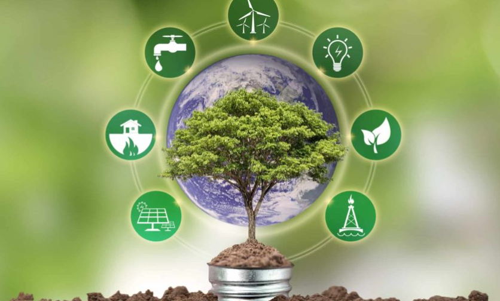

Aplicativos Incentivam Hábitos Sustentáveis no Cotidiano
A tecnologia tem se tornado uma aliada fundamental na promoção de práticas sustentáveis, com aplicativos
transformando pequenas ações individuais em impactos significativos para o meio ambiente. Essas ferramentas
inovadoras combinam conveniência, educação e engajamento para motivar mudanças de hábitos no dia a dia. Veja
como elas estão revolucionando a sustentabilidade:

Redução de Desperdício e Consumo Consciente
Apps de compartilhamento de alimentos:
Ex.: Olio e Too Good To Go conectam usuários a estabelecimentos com excedentes de comida, evitando o
desperdício e oferecendo alimentos a preços reduzidos.
Plataformas de economia circular:
Apps como Freecycle e Vinted incentivam a reutilização de roupas, móveis e eletrônicos, prolongando a
vida útil de produtos.
Mobilidade Sustentável
Transporte público e caronas:
Citymapper e BlaBlaCar facilitam o planejamento de rotas coletivas, reduzindo a dependência de carros
particulares.
Bicicletas e patinetes compartilhados:
Serviços como Lime e Mobike promovem meios de transporte de baixo carbono em centros urbanos.
Gestão de Recursos Naturais
Economia de energia e água:
Apps como JouleBug e WaterAid oferecem dicas personalizadas para reduzir consumo, enquanto dispositivos
inteligentes (ex.: Nest) sincronizam com apps para otimizar uso energético em casa.
Reciclagem inteligente:
RecycleNation e Ecoembes identificam pontos de coleta próximos e explicam como separar resíduos
corretamente.
Gamificação e Engajamento
Desafios e recompensas:
Apps como Forest (que planta árvores reais ao focar em tarefas) e Ecosia (busca que financia
reflorestamento) transformam ações cotidianas em contribuições ambientais.
Competições sociais:
Plataformas como My Little Plastic Footprint permitem comparar progresso com amigos, criando uma rede de
apoio e motivação.
Educação e Conscientização
Rastreadores de pegada ecológica:
Carbon Tracker e Ecologi calculam emissões de CO₂ e sugerem compensações (ex.: plantar árvores ou apoiar
projetos verdes).
Conteúdo educativo:
Apps como AWorld (parceiro da ONU) oferecem cursos e metas alinhadas aos Objetivos de Desenvolvimento
Sustentável (ODS).
Desafios e Oportunidades
Engajamento a longo prazo:
Muitos apps enfrentam dificuldades em manter usuários ativos. Soluções como notificações personalizadas
e recompensas tangíveis (ex.: descontos em lojas parceiras) podem ajudar.
Acessibilidade: É crucial expandir funcionalidades para regiões com menos
infraestrutura, além de traduzir conteúdos para múltiplos idiomas.
Transparência:Apps precisam comprovar seu impacto real (ex.: relatórios de árvores
plantadas ou emissões evitadas) para ganhar confiança.
Aplicativos sustentáveis são mais que ferramentas tecnológicas: são pontes entre a intenção e a ação. Ao
integrar inovação, comunidade e educação, eles democratizam o acesso a um estilo de vida verde, provando que
pequenas mudanças coletivas podem gerar transformações globais. O futuro depende não apenas do
desenvolvimento dessas plataformas, mas da adoção consciente por parte de cada usuário. 🌱📱